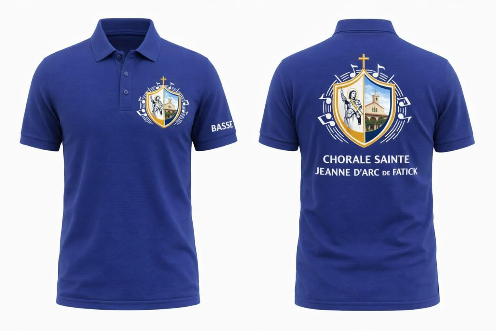
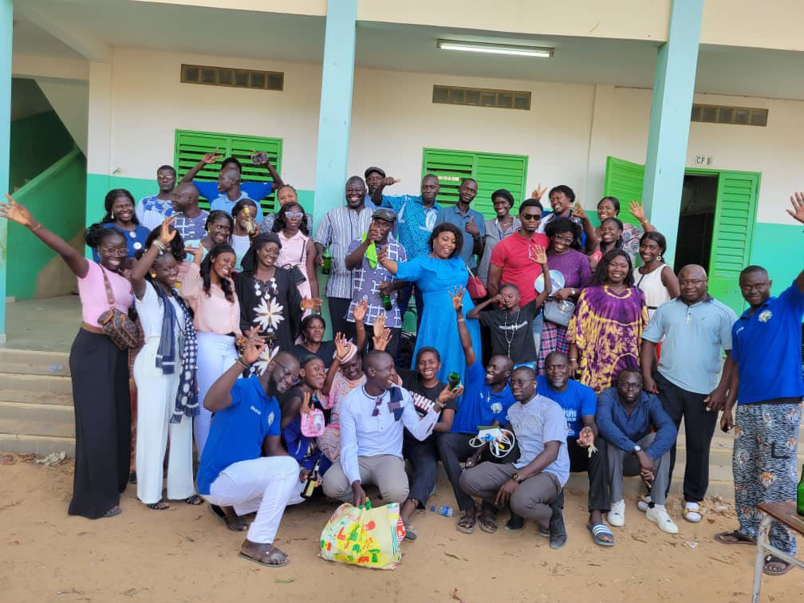
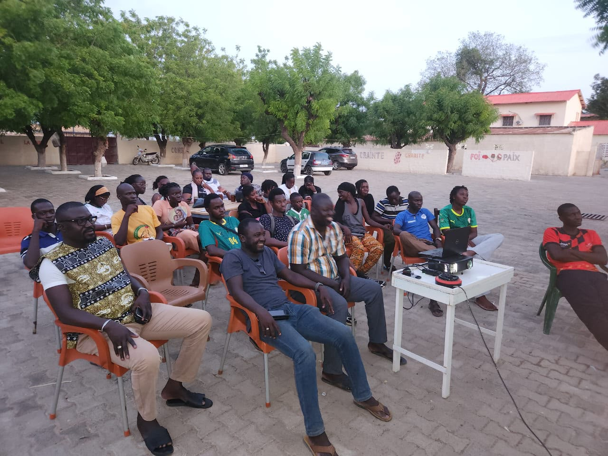
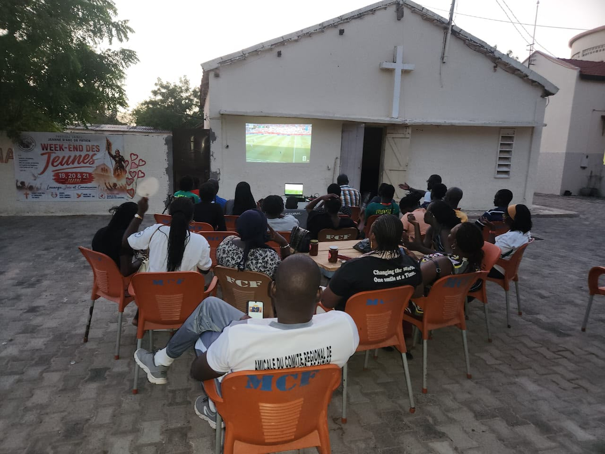
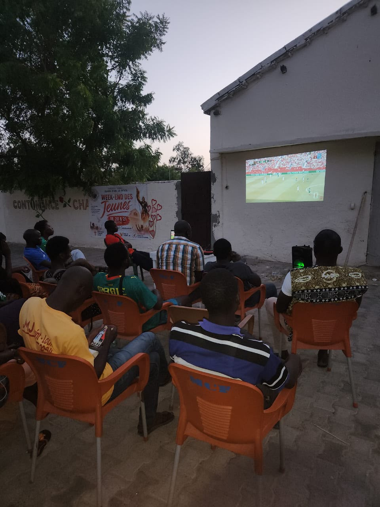
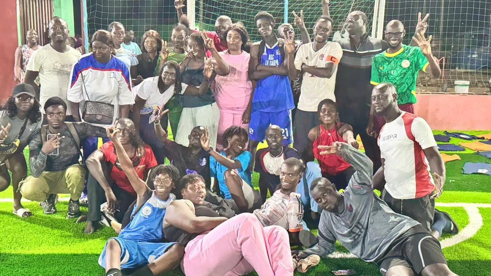
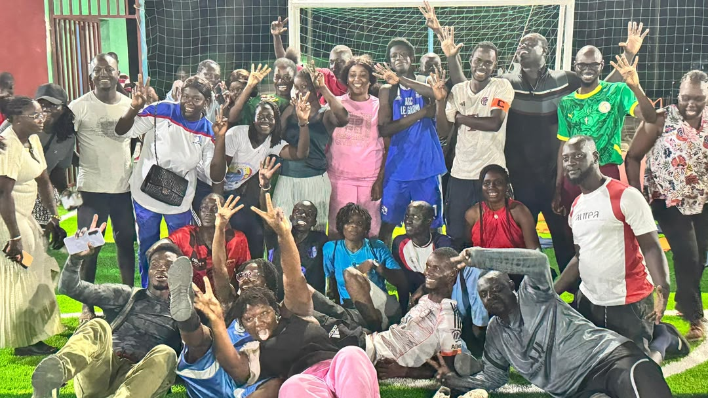
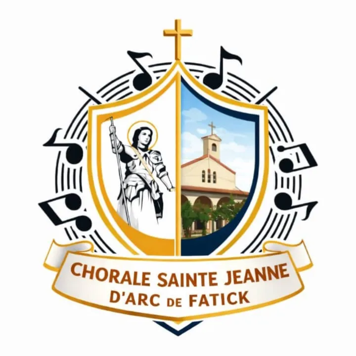

Nos activités
Galerie de la chorale
Découvrez en images les activités, les formations et les moments vécus au sein de notre centre.









Chorale Sainte Jeanne d'arc de Fatick
Découvrez en images les activités, les formations et les moments vécus au sein de notre centre.







Les répétions ordinaires sont fixés les: Lundi , Mercredi et Vendredi de 19h30-21h;
Inscrivez vous à la Newsletter de la Paroisse pour ne rater aucun événement.